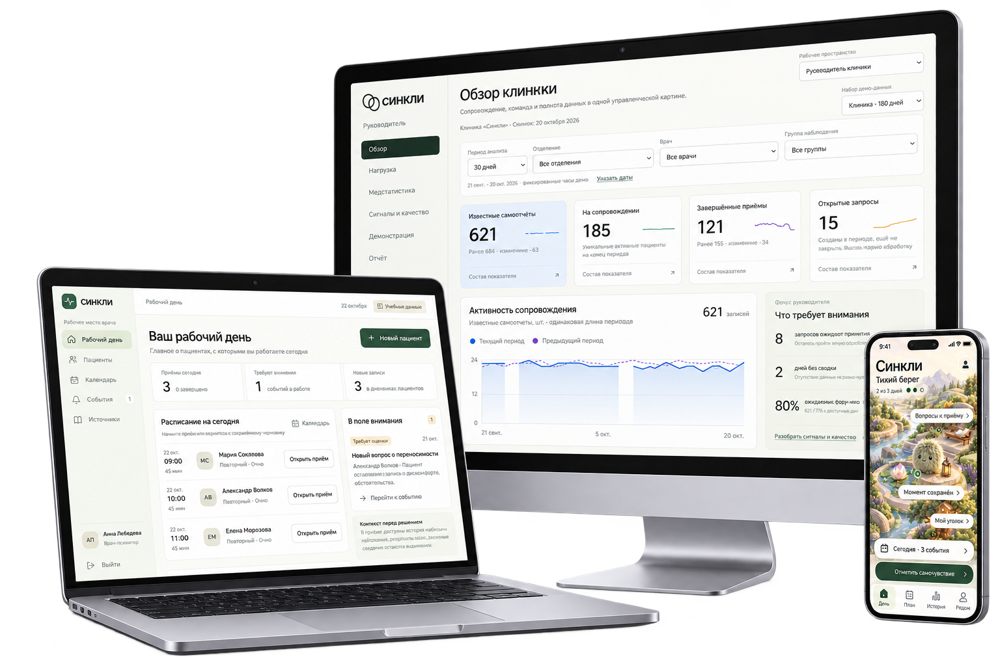

Одна история между приёмами
Самоотчёты, динамика и решения связаны с карточкой пациента у его врача. К следующей встрече сохраняется контекст изменений.
Связываем работу врача, повседневную жизнь пациента и аналитику в единую цифровую среду.
Синкли — цифровая экосистема для сопровождения пациентов с тревожной и депрессивной симптоматикой. Рабочее пространство врача, приложение пациента и аналитика клиники — в одной среде.

01 / Наш подход
Связываем наблюдения пациента, решения врача и аналитику клиники, чтобы между приёмами сохранялся общий контекст.
Самоотчёты, динамика и решения связаны с карточкой пациента у его врача. К следующей встрече сохраняется контекст изменений.
Отмечает самочувствие, видит свою динамику и согласованный план. Повседневные наблюдения становятся частью общей картины.
Источники, изменения и сведения, которые нужно уточнить, доступны в контексте пациента. Клиническое решение остаётся за врачом.
Аналитика сопровождения и работы команды — в пределах полномочий. Доступ к медицинской информации определяется отдельно.
Научная основа
Guo и соавт. сравнили ведение депрессии на основе измерений со стандартной помощью в течение 24 недель.
American Journal of PsychiatryZhu и соавт. объединили данные 2 019 пациентов. Результаты поддерживают MBC, при ограничениях качества и неоднородности исследований.
Journal of Clinical PsychiatryПубликации о русских версиях PHQ-9 и GAD-7 описывают психометрические свойства. Шкала помогает оценке, но не устанавливает диагноз.
| Что важно в практике | синклиЭкосистема | NeuroFlow ↗Поведенческое здоровье | Osmind ↗Психиатрическая практика | Limbic ↗Intake и цифровая поддержка |
|---|---|---|---|---|
| Стандартизированная оценка состояния | ✓ В едином маршруте | Есть | Есть | Есть |
| Интерфейсы команды и пациента | ✓ Веб, десктоп, мобильный | Есть | Есть | Access + Care ↗ |
| Выделение риска и сигналы | ✓ С подтверждением и эскалацией | Есть risk alerts | Есть smart alerts | Есть risk alerts |
| Рекомендации Минздрава и инструкции ГРЛС | ✓ В основе локального контура | Не указано* | Не указано* | Не указано* |
| Контур обработки данных в РФ | ✓ Требование архитектуры | Не указано* | Не указано* | Не указано* |
* Не указано в изученных публичных материалах — это не подтверждение отсутствия функции. Сведения о конкурентах основаны на их собственных описаниях.
Проверено 15.10.2026. Эффективность, тарифы и полнота функций платформ здесь не сравниваются.
02 / Экосистема
Пациент фиксирует своё самочувствие и симптомы в приложении, врач отслеживает изменения состояния между приёмами, а клиника анализирует процесс сопровождения пациентов. У каждого — свои функции и уровень доступа к данным.
История наблюдений, результаты опросников и динамика состояния в одном рабочем пространстве. Быстро готовьтесь к приёмам, замечайте изменения между визитами и определяйте, кому из пациентов требуется ваше внимание.
Перейти в кабинет врачаБЕЗОПАСНОСТЬ МЕДИЦИНСКИХ ДАННЫХ
В Синкли предусмотрены защищённое хранение медицинской информации на российских серверах и доступ к ней в зависимости от роли пользователя. Пациенты могут быть уверены в конфиденциальности своих сведений, а клиники — контролировать работу с медицинскими данными.
Медицинская информация и её резервные копии хранятся и обрабатываются на территории РФ.
Врач видит медицинские карты своих пациентов, руководитель — статистику клиники и нагрузку врачей, администратор — расписание и записи на приём.
Синкли сохраняет историю просмотра и изменения медицинских данных, чтобы клиника могла проверить, кто, когда и какую информацию открывал или редактировал.
Синкли разрабатывается с учётом требований 152-ФЗ и законодательства о врачебной тайне.
Здесь появится отзыв врача о работе с Синкли и сопровождении пациентов между приёмами.
Здесь появится отзыв пациента о повседневном использовании продукта и связи с врачом.
Здесь появится отзыв команды клиники об общей цифровой среде и аналитике.
Медицинский консультант
Специалист по клинической кибернетике
Специалист по клинической кибернетике
Специалист по связям с общественностью
Глава разработки продукта
Коротко о главном
Нет. Синкли анализирует данные о состоянии пациента, помогает врачу замечать важные изменения и предлагает возможные варианты действий. Но все решения о назначении, изменении или отмене лечения остаются за врачом.
Пациенту доступны дневник самочувствия, результаты опросников, история изменений состояния, рекомендации врача и переписка с ним. Лечащему врачу доступны медицинские карточки пациентов, которых он ведёт. Руководитель клиники получает сводную аналитику и информацию о нагрузке врачей, а администратор — инструменты для организации работы клиники. Каждый пользователь получает доступ только к данным, необходимым для его задач.
В основе Синкли — клинические рекомендации Минздрава России, актуальные инструкции к лекарственным препаратам из Государственного реестра лекарственных средств (ГРЛС) и валидированные диагностические шкалы. Каждая рекомендация сопровождается ссылкой на первоисточник, чтобы врач мог проверить информацию и принять обоснованное решение.
Медицинские данные пациентов будут храниться на российских серверах, а доступ к ним получат только сотрудники клиники в пределах своих обязанностей. При подключении клиники учитываются требования 152-ФЗ, включая необходимые согласия и меры защиты информации.
Пациенты могут быть уверены в конфиденциальности своих данных — информация об их здоровье не будет доступна посторонним. На демонстрационном сайте используются только вымышленные данные, медицинскую информацию посетителей мы не собираем.